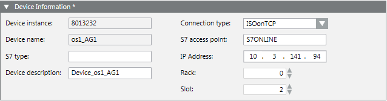
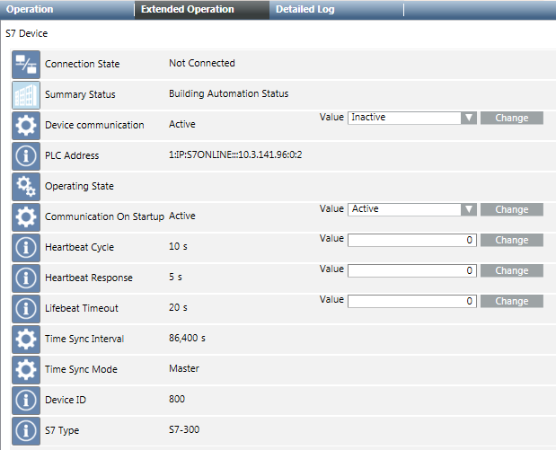

Configure a S7 Device
The following procedure describes how to modify the configuration of an S7 device.
- Select Project > Field Networks > [S7 network] > [S7 device to be modified].
- Select the S7 tab.
- Open the Device Information expander.
This expander displays the S7 device data settings. You can view the Device instance (S7 device numeric ID) and Device Name (name of the S7 device) and modify the following parameters: - S7 Type (S7 CPU type)
- Device Description (S7 device short description)
- Connection Type: ISOonTCP (IP)
NOTE: The Named connection (NC) type is not used in SICLIMAT X. - S7 Access Point: (must always be) S7ONLINE
- IP Address: (IP address of the PLC used to establish a connection to a PLC)
- Rack: (S7 CPU Rack number)
- Slot: (S7 CPU Slot number)
NOTE: Default is Slot = 2. It must be changed for S7-400.
- Open the Time Sync Information expander and specify the following parameters:
- Time Sync Mode
This parameter determines if and how the current time on the PLC will be accessed and/or modified. The following values are allowed:
- Ignore: The time on the PLC is neither read nor written.
- Master: The time on the PLC is changed to the current management platform server date and time.
- Slave: The current time is read from the PLC in the configured interval (Time Sync Interval). - Time Sync Interval
This interval in seconds determines how often the current time is read from the PLC or written to the PLC. - Click Save
 .
.
- The S7 device configuration is saved.
You can view all the device parameters in the Extended Operation tab.
You can also modify some of these parameters, namely:
- Device communication
Stop or start the device communication online (driver is already started). - Communication On Startup
Enable or disable the device communication with the driver. Changes are applied only after the driver is stopped and restarted. 
NOTE:
If Communication On Startup =Active, the device will start the communication when the driver starts even if Device communication =Inactive.
If Communication On Startup =Inactive, the device will never start the communication when the driver starts (even if Device communication =Active). In order to communicate with the S7 device, the Device communication must be set toActiveagain.- Heartbeat Cycle
Define the timeout in seconds between heartbeat requests sent to each connection. - Heartbeat Response
Define the maximum time in seconds allowed without receiving response from any connections before the connection is considered failed. - Lifebeat Timeout
Define the timeout in seconds used by the driver to monitor connection errors.
